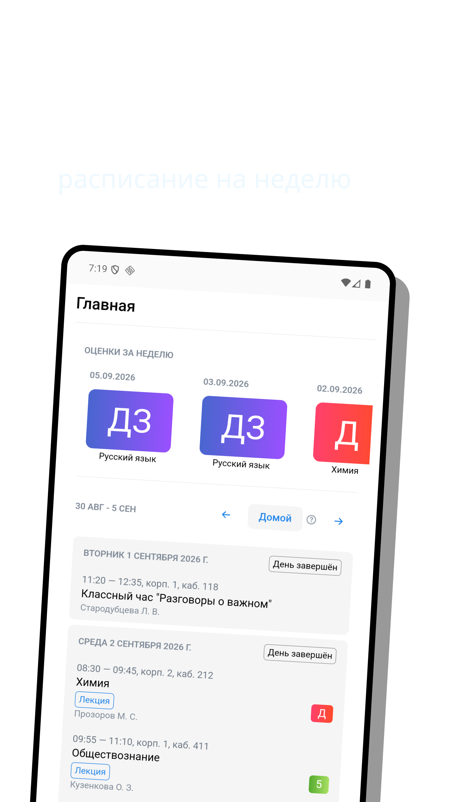

Неофициальный клиент Сетевого города · Android
Сетевой город
в удобном приложении
Дневник СПО работает во всех регионах: расписание, оценки, объявления и статистика успеваемости — быстрее и понятнее, чем в браузере.
Бесплатно · без рекламы · нужен логин и пароль от электронного дневника
- Все регионы
- выбор портала Сетевого города на экране входа
- Расписание на неделю
- пары, кабинеты, преподаватели, кнопка «Домой»
- Оценки и статистика
- текущие, итоговые, средний балл, уведомления
- Объявления колледжа
- графики занятий и новости в один клик
Что внутри приложения
Листайте экраны — как в сторе, только интерактивно.

Как войти за минуту
Тот же логин и пароль, что для Сетевого города в браузере.
- 1Установитечерез RuStore или APK с этого сайта
- 2Выберите регионнайдите свой город и портал дневника
- 3Введите логин и парольпароль уходит напрямую в дневник и не хранится
Нет RuStore — ставьте APK. Разрешите установку из браузера один раз, дальше обновления как обычно.
Частые вопросы
Нет. Дневник СПО — независимый неофициальный клиент. Он не является продуктом АО «ИРТех» и операторов региональных порталов.